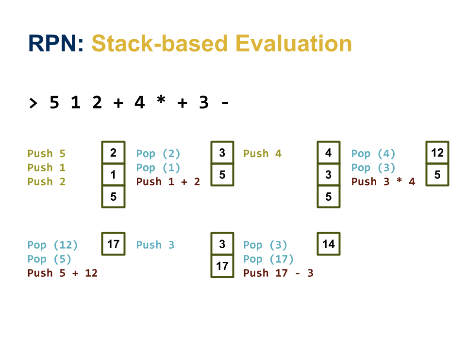

Homework 04: RPN, Unique
The goal of this homework assignment is to allow you to practice using Python to create scripts that utilize data structures such as lists and dicts to create simple Unix filters or utilities.
For this assignment, record your scripts and any responses to the following
activities in the homework04 folder of your assignments GitHub
repository and push your work by noon Saturday, February 25.
Activity 0: Preparation¶
Before starting this homework assignment, you should first perform a git
pull to retrieve any changes in your remote GitHub repository:
$ cd path/to/repository # Go to assignments repository
$ git checkout master # Make sure we are in master branch
$ git pull --rebase # Get any remote changes not present locally
Next, create a new branch for this assignment:
$ git checkout -b homework04 # Create homework04 branch and check it out
Once this is done, download the Makefile and test scripts:
# Go to homework04 folder
$ cd homework04
# Download the Makefile
$ curl -LO https://raw.githubusercontent.com/nd-cse-20289-sp23/cse-20289-sp23-assignments/master/homework04/Makefile
# Add and commit Makefile
$ git add Makefile
$ git commit -m "homework04: add Makefile"
# Download the test scripts
$ make test-scripts
Note, you do not need to add and commit the test scripts since the
Makefile will automatically download them again whenever you run make.
You are now ready to work on the activities below.
Frequently Asked Questions¶
Activity 1: RPN (5 Points)¶

Back in the day, when phones were landlines, computers were the size of minivans, and the instructor was just a twinkle in his parents' eye, the pride and joy of every engineering geek was their HP scientific calculator. Even the mighty Woz1 cherished his legendary HP-35.
Of course, since the old timers back then were super awesome (unlike today's
zoomers), they didn't use the standard lame infix notation to perform
their calculations; instead, they used the uber 1337 reverse polish
notation.
That is, rather than entering in <operand> <operation> <operand>, you would
enter in <operand> <operand> <operation> to perform a calculation on the
RPN calculator. Using RPN eliminates the need for paretheses and
orders of operation since it is never ambiguous what operands are used with
which operation; the operation is always applied to the previous arguments.
This means that if you wanted to perform 3 + 4, you would have to enter in:
3 4 +
To prove that you too are uber awesome and to relive some of the glory days,
you are to create a RPN calulator that can perform the following
arithmetic operations: +, -, *, /.
Task 1: rpn.py¶
The rpn.py script does not take any flags besides -h:
$ ./rpn.py -h
Usage: rpn.py
By default, `rpn.py` will process expressions from standard input.
As noted in the usage message, the rpn.py script will process RPN
expressions by reading in one expression per line, evaluating that
expression, and then displaying the results.
For instance, given the following input:
4
5 8 * 1 +
The rpn.py script will output the following:
4.0
41.0
Here is an example of rpn.py in action:
$ ./rpn.py
4
4.0
5 8 * 1 +
41.0
Skeleton¶
Here is a skeleton you can use to start your rpn.py script:
# Download rpn.py skeleton
$ curl -LO https://raw.githubusercontent.com/nd-cse-20289-sp23/cse-20289-sp23-assignments/master/homework04/rpn.py
It should look something like this:
#!/usr/bin/env python3
import os
import sys
# Globals
OPERATORS = {'+', '-', '*', '/'}
# Functions
def usage(status=0):
''' Display usage message and exit with status. '''
progname = os.path.basename(sys.argv[0])
print(f'''Usage: {progname}
By default, {progname} will process expressions from standard input.''')
sys.exit(status)
def error(message):
''' Display error message and exit with error. '''
print(message, file=sys.stderr)
sys.exit(1)
def evaluate_operation(operation, operand1, operand2):
''' Return the result of evaluating the operation with operand1 and
operand2.
>>> evaluate_operation('+', 4, 2)
6
>>> evaluate_operation('-', 4, 2)
2
>>> evaluate_operation('*', 4, 2)
8
>>> evaluate_operation('/', 4, 2)
2.0
'''
pass
def evaluate_expression(expression):
''' Return the result of evaluating the RPN expression.
>>> evaluate_expression('4 2 +')
6.0
>>> evaluate_expression('4 2 -')
2.0
>>> evaluate_expression('4 2 *')
8.0
>>> evaluate_expression('4 2 /')
2.0
>>> evaluate_expression('4 +')
Traceback (most recent call last):
...
SystemExit: 1
>>> evaluate_expression('a b +')
Traceback (most recent call last):
...
SystemExit: 1
'''
pass
def main():
''' Parse command line arguments and process expressions from standard
input. '''
pass
# Main Execution
if __name__ == '__main__':
main()
Notes¶
- pass is a placeholder in Python that does nothing. You may remove these statements once you add code to the functions above.
Doctests¶
The >>> ... strings under each function are doctests. These serve a dual
purpose: they provided documentation on what the function should do AND they
act as unit tests for the function.
You must not remove or alter these doctests.
Hints¶
-
usageis provided to you and you should call it from themainfunction when appropriate. -
erroris provided to you and you should call it from theevaluate_expressionfunction when you encounter an error such as not having enough operands or not being able to convert a token into afloat. -
evaluate_operationtakes one of the arithmeticoperationsas an argument along with twooperands. You are to compute the result of performing theoperationon the twooperandsand return the result. -
evaluate_expressiontakes a RPNexpressionas a string, which you will need to split into individual tokens or words. You can evaluate theexpressionby using a stack in the following manner:for each word in expression: if word is an operation: evaluate operation using top two items from stack else: convert word into floating point push result of evaluation or conversion to stack return top of stack Note 1: Must check if stack has enough operands Note 2: Must check if conversion is successfulHere is a diagram that shows how you can use a stack to evaluate:
5 1 2 + 4 * + 3 -: -
mainparses the command line arguments and then evaluates each RPN expression from standard input and displays the result.
Task 2: Testing¶
To aid you in testing the rpn.py script, we have provided you with both
doctests and test_rpn.sh, which you can use as follows:
# Run just the doctests
$ python3 -m doctest rpn.py -v
...
4 items had no tests:
rpn
rpn.error
rpn.main
rpn.usage
2 items passed all tests:
6 tests in rpn.evaluate_expression
4 tests in rpn.evaluate_operation
10 tests in 6 items.
10 passed and 0 failed.
Test passed.
# Run doctests and functional tests
$ ./test_rpn.sh
Testing rpn.py ...
Doctests ... 2.00 / 2.00
Usage ... Success
Usage (Bad Flags) ... Success
Expressions 0 ... Success
Expressions 1 ... Success
Expressions 2 ... Success
Error 1 ... Success
Error 2 ... Success
Score 5.00 / 5.00
Status Success
Activity 2: Unique (5 Points)¶
Ben2 hates that he has to sort his data before he can use uniq. Now
that he is learning about the awesomeness of Python and power of data
structures, he decides to write his own version of uniq that uses a dict
to avoid the need for sorting. Because it is 2022 and vowels are no
longer expensive, he calls his version of the Unix filter: unique.py.
Task 1: unique.py¶
The unique.py script supports a few of uniq's most frequently used flags:
$ ./unique.py -h
Usage: unique.py [flags]
-c Prefix lines by the number of occurrences
-d Only print duplicate lines
-i Ignore differences in case when comparing, prints out full line in lowercase
-u Only print unique lines
By default, `unique.py` prints one of each type of line.
The -c flag means that the program will prefix each line with the number of
times each line appears.
The -d flag modifies the output so that only duplicate lines (ie. count >
1) are displayed.
The -i flag will force the program to ignore case by converting each line
into lowercase.
The -u flag modifies the output so that only unique lines (ie. count == 1)
are displayed.
Given the following pokemon.txt file:
pikachu
pikachu
charmander
Squirtle
squirtle
squirtle
Here are examples of unique.py in action:
$ cat pokemon.txt | ./unique.py
pikachu
charmander
Squirtle
squirtle
$ cat pokemon.txt | ./unique.py -i -c -d
2 pikachu
3 squirtle
$ cat pokemon.txt | ./unique.py -u
charmander
Squirtle
Skeleton¶
Here is a skeleton you can use to start your unique.py script:
# Download unique.py skeleton
$ curl -LO https://raw.githubusercontent.com/nd-cse-20289-sp23/cse-20289-sp23-assignments/master/homework04/unique.py
It should look something like this:
#!/usr/bin/env python3
import os
import sys
# Functions
def usage(status=0):
''' Display usage message and exit with status. '''
progname = os.path.basename(sys.argv[0])
print(f'''Usage: {progname} [flags]
-c Prefix lines by the number of occurrences
-d Only print duplicate lines
-i Ignore differences in case when comparing, prints out full line in lowercase
-u Only print unique lines
By default, {progname} prints one of each type of line.''')
sys.exit(status)
def count_frequencies(stream=sys.stdin, ignore_case=False):
''' Count the line frequencies from the data in the specified stream while
ignoring case if specified. '''
pass
def print_lines(frequencies, occurrences=False, duplicates=False, unique_only=False):
''' Display line information based on specified parameters:
- occurrences: if True, then prefix lines with number of occurrences
- duplicates: if True, then only print duplicate lines
- unique_only: if True, then only print unique lines
'''
pass
def main():
''' Process command line arguments, count frequencies from standard input,
and then print lines. '''
pass
# Main Execution
if __name__ == '__main__':
main()
Hints¶
-
usageis provided to you and you should call it from themainfunction when appropriate. -
count_frequenciesreads each line in thestreamand uses a dict to keep track of how often each line occurs. Ifignore_caseis set, then all lines are converted into lowercase. -
print_linesiterates through the results ofcount_frequenciesand shows each line, depending on the settings ofoccurrences(show counts),duplicates(only show lines with duplicates), andunique_only(only show lines that are unique).When
occurrencesisTrue, you can use the following code to format your output:print(f'{frequency:>7} {line}')This will ensure that the
frequencyor count for thelineis properly aligned. -
mainprocesses the command line arguments using thewhileloop discussed in class and then counts the frequences of the lines from standard input and then prints the results based on the parsed options.
Task 2: Testing¶
To aid you in testing the unique.py script, we have provided you with both
unique_test.py and test_unique.sh, which you can use as follows:
# Run just the unit tests
$ ./unique_test.py -v
test_00_count_frequencies (__main__.UniqueTest) ... ok
test_01_count_frequencies_ignore_case (__main__.UniqueTest) ... ok
test_02_print_lines (__main__.UniqueTest) ... ok
test_03_print_lines_ignore_case (__main__.UniqueTest) ... ok
test_04_print_lines_occurrences (__main__.UniqueTest) ... ok
test_05_print_lines_ignore_case_occurrences (__main__.UniqueTest) ... ok
test_06_print_lines_duplicates (__main__.UniqueTest) ... ok
test_07_print_lines_ignore_case_duplicates (__main__.UniqueTest) ... ok
test_08_print_lines_unique_only (__main__.UniqueTest) ... ok
test_09_print_lines_ignore_unique_only (__main__.UniqueTest) ... ok
test_10_print_lines_occurrences_duplicates (__main__.UniqueTest) ... ok
test_11_print_lines_ignore_case_occurrences_duplicates (__main__.UniqueTest) ... ok
test_12_print_lines_occurrences_unique_only (__main__.UniqueTest) ... ok
test_13_print_lines_ignore_case_occurrences_unique_only (__main__.UniqueTest) ... ok
----------------------------------------------------------------------
Ran 14 tests in 0.001s
OK
# Run unit and functional tests
$ ./test_unique.sh
Testing unique.py ...
Unit Tests ... 2.00 / 2.00
Usage ... Success
Usage (Bad Flags) ... Success
Unique ... Success
Unique -i ... Success
Unique -c ... Success
Unique -i -c ... Success
Unique -d ... Success
Unique -i -d ... Success
Unique -c -d ... Success
Unique -i -c -d ... Success
Unique -u ... Success
Unique -i -u ... Success
Unique -c -u ... Success
Unique -i -c -u ... Success
Score 5.00 / 5.00
Status Success
Activity 3: Quiz (2 Points)¶
Once you have completed all the activities above, you are to complete the following reflection quiz:
As with Reading 01, you will need to store your answers in a
homework04/answers.json file. You can use the form above to generate the
contents of this file, or you can write the JSON by hand.
To test your quiz, you can use the check.py script:
$ ../.scripts/check.py
Checking homework04 quiz ...
Q01 0.20
Q02 0.40
Q03 0.60
Q04 0.20
Q05 0.60
Score 2.00 / 2.00
Status Success
Guru Point (1 Extra Credit Point)¶
For extra credit, you are to extend the rpn.py script to support the
exponent operation:
2 3 ^ -> 8
Once you have implemented this functionality, you are to extend the existing
doctests in your rpn.py to verify that the new operation is implemented
correctly. Moreover, you are to create a new rpn_test.py that uses
unittest to test each arithmetic operation that your rpn.py script
supports (hint: you can use unique_test.py as a reference).
Note, unit testing is an important software development method used in most modern workplaces and the purpose of this extra credit opportunity is to allow you to practice making your own tests for a program you wrote.
Verification¶
To get credit for this Guru Point, show your modified rpn.py and your new
rpn_test.py to a TA to verify (or attached a video / screenshot to your
Pull Request). You have up until a week after this assignment is due
to verify your Guru Point.
Self-Service Extension¶
Remember that you can always forgo this Guru Point for two extra days to do the homework. That is, if you need an extension, you can simply skip the Guru Point and you will automatically have until Monday to complete the assignment for full credit.
Just leave a note on your Pull Request of your intentions.
Submission¶
To submit your assignment, please commit your work to the homework04 folder
of your homework04 branch in your assignments GitHub repository.
Your homework04 folder should only contain the following files:
- Makefile
- answers.json
- rpn.py
- unique.py
Note: You do not need to commit the test scripts because the Makefile
automatically downloads them.
#--------------------------------------------------
# BE SURE TO DO THE PREPARATION STEPS IN ACTIVITY 0
#--------------------------------------------------
$ cd homework04 # Go to Homework 03 directory
$ $EDITOR rpn.py # Edit script
$ git add rpn.py # Mark changes for commit
$ git commit -m "homework04: Activity 1 completed" # Record changes
...
$ $EDITOR unique.py # Edit script
$ git add unique.py # Mark changes for commit
$ git commit -m "homework04: Activity 2 completed" # Record changes
...
$ $EDITOR answers.json # Edit quiz
$ git add answers.json # Mark changes for commit
$ git commit -m "homework04: Activity 3 completed" # Record changes
...
$ git push -u origin homework04 # Push branch to GitHub
Pull Request¶
Remember to create a Pull Request and assign the appropriate TA from the Reading 05 TA List.
DO NOT MERGE your own Pull Request. The TAs use open Pull Requests to keep track of which assignments to grade. Closing them yourself will cause a delay in grading and confuse the TAs.